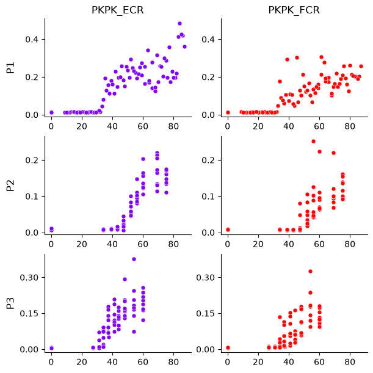
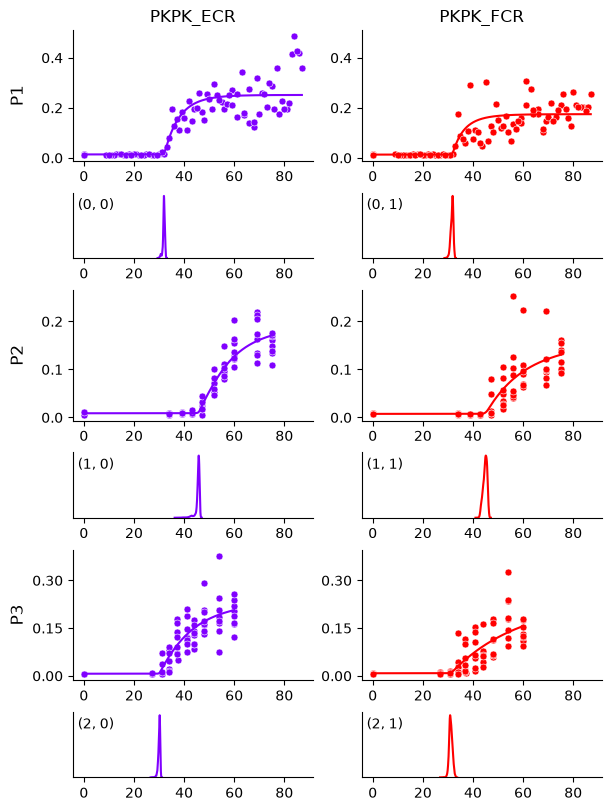
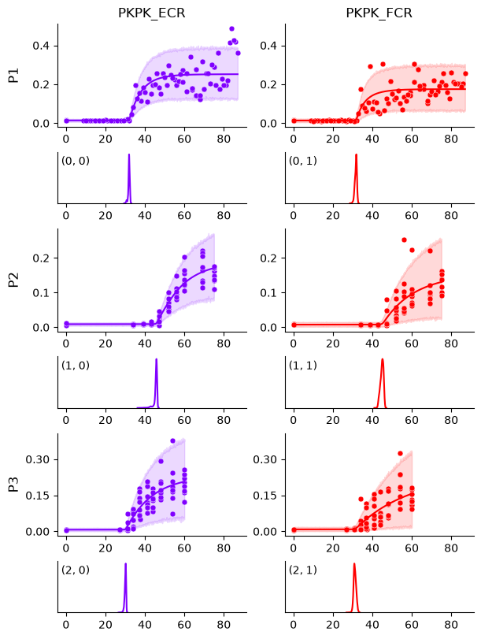

Getting Started#
We’re going to use a standard hierarchical Bayesian model and the rectified-logistic function to estimate neural recruitment curves.
A Simple Example#
Tip
If you have trouble running the commands in this tutorial, please copy the command and its output, then open an issue on our GitHub repository. We’ll do our best to help you!
Begin by reading the mock_data.csv file:
import pandas as pd
url = "https://raw.githubusercontent.com/hbmep/hbmep/refs/heads/docs-data/data/mock_data.csv"
df = pd.read_csv(url)
df shape: (245, 4)
df columns: TMSIntensity, participant, PKPK_ECR, PKPK_FCR
All participants: P1, P2, P3
First 5 rows:
TMSIntensity participant PKPK_ECR PKPK_FCR
0 43.79 P1 0.197 0.048
1 55.00 P1 0.224 0.068
2 41.00 P1 0.112 0.110
3 43.00 P1 0.149 0.058
4 14.00 P1 0.014 0.011
This dataset contains TMS responses (peak-to-peak amplitude, in mV) for three participants (P1, P2, P3), recorded from two muscles (ECR and FCR).
The column TMSIntensity represents stimulation intensity in percent maximum stimulator output (0–100% MSO).
Build the model#
Next, we initialize a standard hierarchical Bayesian model. This step typically consists of assigning the model’s attributes to the appropriate dataframe columns, setting the sampling parameters, and choosing the recruitment curve function.
import hbmep as mep
model = mep.StandardHB()
# Point to the respective columns in dataframe
model.intensity = "TMSIntensity"
model.features = ["participant"]
model.response = ["PKPK_ECR", "PKPK_FCR"]
# Specify the sampling parameters
model.mcmc_kw = {
"num_chains": 4,
"thinning": 1,
"num_warmup": 1000,
"num_samples": 1000,
}
# Set the function
model._model = model.rectified_logistic
Running the model#
Before fitting the model, we can visualize the dataset. Since the plot is saved as a PDF, we need to specify an output path.
import os
# Create the output directory
current_dir = os.getcwd()
output_dir = os.path.join(current_dir, "hbmep-getting-started")
os.makedirs(output_dir, exist_ok=True)
# Plot dataset and save it as a PDF
output_path = os.path.join(output_dir, "dataset.pdf")
model.plot(df, output_path=output_path)

The plot shows rows as participants and columns as muscles. The x-axis is TMS intensity (% MSO), and the y-axis is MEP peak-to-peak amplitude (mV).
Next, we process the dataframe by encoding categorical feature columns. This returns the same dataframe with encoded values, plus an encoder dictionary for mapping back to original labels.
# Process the dataframe
df, encoder = model.process(df)
Encoded participants: 0, 1, 2
Participant mapping: 0 -> P1, 1 -> P2, 2 -> P3
Now we run the model to estimate curves.
# Run
mcmc, posterior = model.run(df=df)
# Check convergence diagnostics
summary_df = model.summary(posterior)
print(summary_df.to_string())
Show code cell output
2026-09-21 14:42:19,339 - hbmep.util.util - INFO - func:trace took: 1.11 sec
2026-09-21 14:42:19,339 - hbmep.model.base_model - INFO - Running...
0%| | 0/2000 [00:00<?, ?it/s]
Compiling.. : 0%| | 0/2000 [00:00<?, ?it/s]
0%| | 0/2000 [00:00<?, ?it/s]
Compiling.. : 0%| | 0/2000 [00:00<?, ?it/s]
0%| | 0/2000 [00:00<?, ?it/s]
Compiling.. : 0%| | 0/2000 [00:00<?, ?it/s]
0%| | 0/2000 [00:00<?, ?it/s]
Compiling.. : 0%| | 0/2000 [00:00<?, ?it/s]
Running chain 0: 0%| | 0/2000 [00:02<?, ?it/s]
Running chain 1: 0%| | 0/2000 [00:02<?, ?it/s]
Running chain 2: 0%| | 0/2000 [00:02<?, ?it/s]
Running chain 3: 0%| | 0/2000 [00:02<?, ?it/s]
Running chain 1: 5%|▊ | 100/2000 [00:04<00:55, 34.21it/s]
Running chain 3: 5%|▊ | 100/2000 [00:05<00:56, 33.43it/s]
Running chain 2: 5%|▊ | 100/2000 [00:05<00:58, 32.34it/s]
Running chain 0: 5%|▊ | 100/2000 [00:05<01:02, 30.62it/s]
Running chain 3: 10%|█▌ | 200/2000 [00:05<00:28, 62.59it/s]
Running chain 2: 10%|█▌ | 200/2000 [00:05<00:30, 58.49it/s]
Running chain 1: 10%|█▌ | 200/2000 [00:05<00:31, 57.07it/s]
Running chain 3: 15%|██▎ | 300/2000 [00:06<00:18, 90.97it/s]
Running chain 0: 10%|█▌ | 200/2000 [00:06<00:33, 53.31it/s]
Running chain 1: 15%|██▎ | 300/2000 [00:06<00:20, 83.03it/s]
Running chain 2: 15%|██▎ | 300/2000 [00:06<00:20, 82.79it/s]
Running chain 3: 20%|██▊ | 400/2000 [00:06<00:13, 116.57it/s]
Running chain 0: 15%|██▎ | 300/2000 [00:06<00:21, 78.69it/s]
Running chain 1: 20%|██▊ | 400/2000 [00:06<00:14, 113.85it/s]
Running chain 2: 20%|██▊ | 400/2000 [00:06<00:14, 111.86it/s]
Running chain 3: 25%|███▌ | 500/2000 [00:07<00:10, 137.05it/s]
Running chain 0: 20%|██▊ | 400/2000 [00:07<00:15, 104.84it/s]
Running chain 1: 25%|███▌ | 500/2000 [00:07<00:11, 134.73it/s]
Running chain 2: 25%|███▌ | 500/2000 [00:07<00:11, 133.82it/s]
Running chain 3: 30%|████▏ | 600/2000 [00:07<00:09, 153.94it/s]
Running chain 0: 25%|███▌ | 500/2000 [00:07<00:12, 122.23it/s]
Running chain 2: 30%|████▏ | 600/2000 [00:07<00:08, 156.64it/s]
Running chain 1: 30%|████▏ | 600/2000 [00:07<00:09, 150.15it/s]
Running chain 3: 35%|████▉ | 700/2000 [00:08<00:07, 175.63it/s]
Running chain 2: 35%|████▉ | 700/2000 [00:08<00:07, 183.50it/s]
Running chain 0: 30%|████▏ | 600/2000 [00:08<00:10, 138.08it/s]
Running chain 1: 35%|████▉ | 700/2000 [00:08<00:08, 162.05it/s]
Running chain 3: 40%|█████▌ | 800/2000 [00:08<00:06, 198.87it/s]
Running chain 2: 40%|█████▌ | 800/2000 [00:08<00:05, 208.20it/s]
Running chain 0: 35%|████▉ | 700/2000 [00:08<00:08, 162.27it/s]
Running chain 1: 40%|█████▌ | 800/2000 [00:08<00:06, 183.75it/s]
Running chain 3: 45%|██████▎ | 900/2000 [00:08<00:05, 215.43it/s]
Running chain 2: 45%|██████▎ | 900/2000 [00:08<00:04, 224.41it/s]
Running chain 0: 40%|█████▌ | 800/2000 [00:09<00:06, 185.31it/s]
Running chain 1: 45%|██████▎ | 900/2000 [00:09<00:05, 198.41it/s]
Running chain 3: 50%|██████▌ | 1000/2000 [00:09<00:04, 210.75it/s]
Running chain 2: 50%|██████▌ | 1000/2000 [00:09<00:04, 215.98it/s]
Running chain 0: 45%|██████▎ | 900/2000 [00:09<00:05, 206.47it/s]
Running chain 3: 55%|███████▏ | 1100/2000 [00:09<00:04, 202.75it/s]
Running chain 1: 50%|██████▌ | 1000/2000 [00:09<00:05, 177.10it/s]
Running chain 2: 55%|███████▏ | 1100/2000 [00:09<00:04, 211.44it/s]
Running chain 0: 50%|██████▌ | 1000/2000 [00:10<00:05, 195.87it/s]
Running chain 2: 60%|███████▊ | 1200/2000 [00:10<00:03, 211.80it/s]
Running chain 3: 60%|███████▊ | 1200/2000 [00:10<00:04, 195.13it/s]
Running chain 1: 55%|███████▏ | 1100/2000 [00:10<00:05, 169.50it/s]
Running chain 0: 55%|███████▏ | 1100/2000 [00:10<00:04, 195.65it/s]
Running chain 2: 65%|████████▍ | 1300/2000 [00:10<00:03, 215.28it/s]
Running chain 3: 65%|████████▍ | 1300/2000 [00:10<00:03, 197.26it/s]
Running chain 1: 60%|███████▊ | 1200/2000 [00:11<00:04, 173.01it/s]
Running chain 0: 60%|███████▊ | 1200/2000 [00:11<00:04, 196.37it/s]
Running chain 2: 70%|█████████ | 1400/2000 [00:11<00:02, 209.60it/s]
Running chain 3: 70%|█████████ | 1400/2000 [00:11<00:03, 196.08it/s]
Running chain 1: 65%|████████▍ | 1300/2000 [00:11<00:03, 176.72it/s]
Running chain 0: 65%|████████▍ | 1300/2000 [00:11<00:03, 193.20it/s]
Running chain 2: 75%|█████████▊ | 1500/2000 [00:11<00:02, 208.40it/s]
Running chain 3: 75%|█████████▊ | 1500/2000 [00:11<00:02, 192.48it/s]
Running chain 1: 70%|█████████ | 1400/2000 [00:12<00:03, 179.89it/s]
Running chain 0: 70%|█████████ | 1400/2000 [00:12<00:03, 190.01it/s]
Running chain 2: 80%|██████████▍ | 1600/2000 [00:12<00:01, 202.11it/s]
Running chain 3: 80%|██████████▍ | 1600/2000 [00:12<00:02, 192.01it/s]
Running chain 0: 75%|█████████▊ | 1500/2000 [00:12<00:02, 191.40it/s]
Running chain 1: 75%|█████████▊ | 1500/2000 [00:12<00:02, 181.22it/s]
Running chain 2: 85%|███████████ | 1700/2000 [00:12<00:01, 206.31it/s]
Running chain 3: 85%|███████████ | 1700/2000 [00:13<00:01, 189.00it/s]
Running chain 0: 80%|██████████▍ | 1600/2000 [00:13<00:02, 190.81it/s]
Running chain 1: 80%|██████████▍ | 1600/2000 [00:13<00:02, 177.59it/s]
Running chain 2: 90%|███████████▋ | 1800/2000 [00:13<00:00, 200.45it/s]
Running chain 3: 90%|███████████▋ | 1800/2000 [00:13<00:01, 188.68it/s]
Running chain 0: 85%|███████████ | 1700/2000 [00:13<00:01, 190.47it/s]
Running chain 2: 95%|████████████▎| 1900/2000 [00:13<00:00, 198.53it/s]
Running chain 1: 85%|███████████ | 1700/2000 [00:13<00:01, 174.74it/s]
Running chain 3: 95%|████████████▎| 1900/2000 [00:14<00:00, 187.43it/s]
Running chain 0: 90%|███████████▋ | 1800/2000 [00:14<00:01, 194.34it/s]
Running chain 2: 100%|█████████████| 2000/2000 [00:14<00:00, 198.88it/s]
Running chain 2: 100%|█████████████| 2000/2000 [00:14<00:00, 139.33it/s]
Running chain 1: 90%|███████████▋ | 1800/2000 [00:14<00:01, 176.89it/s]
Running chain 3: 100%|█████████████| 2000/2000 [00:14<00:00, 190.70it/s]
Running chain 3: 100%|█████████████| 2000/2000 [00:14<00:00, 136.86it/s]
Running chain 0: 95%|████████████▎| 1900/2000 [00:14<00:00, 198.02it/s]
Running chain 1: 95%|████████████▎| 1900/2000 [00:14<00:00, 180.58it/s]
Running chain 0: 100%|█████████████| 2000/2000 [00:15<00:00, 195.30it/s]
Running chain 0: 100%|█████████████| 2000/2000 [00:15<00:00, 131.11it/s]
Running chain 1: 100%|█████████████| 2000/2000 [00:15<00:00, 181.62it/s]
Running chain 1: 100%|█████████████| 2000/2000 [00:15<00:00, 128.91it/s]
2026-09-21 14:42:35,153 - hbmep.util.util - INFO - func:run took: 16.92 sec
2026-09-21 14:42:35,282 - hbmep.util.util - INFO - func:summary took: 0.13 sec
mean sd hdi_2.5% hdi_97.5% mcse_mean mcse_sd ess_bulk ess_tail r_hat
a_loc 34.849 6.324 22.898 47.346 0.396 0.835 786.0 239.0 1.00
a_scale 11.484 7.499 3.787 26.195 0.380 0.628 820.0 309.0 1.00
b_scale 0.191 0.117 0.060 0.373 0.003 0.013 1388.0 1433.0 1.00
g_scale 0.013 0.005 0.006 0.024 0.000 0.000 1049.0 1289.0 1.01
h_scale 0.272 0.119 0.117 0.506 0.004 0.007 1038.0 1166.0 1.00
v_scale 4.594 2.931 0.177 10.244 0.050 0.044 2392.0 1742.0 1.00
c₁_scale 3.076 2.677 0.062 8.479 0.049 0.044 2377.0 2873.0 1.00
c₂_scale 0.278 0.101 0.119 0.484 0.003 0.003 1257.0 1621.0 1.00
a[0, 0] 31.928 0.432 30.920 32.709 0.013 0.018 2118.0 725.0 1.01
a[0, 1] 31.622 0.538 30.535 32.568 0.012 0.010 2315.0 2250.0 1.00
a[1, 0] 45.471 0.996 43.241 46.439 0.042 0.082 1112.0 700.0 1.00
a[1, 1] 44.831 0.804 43.196 46.187 0.016 0.010 2821.0 2902.0 1.00
a[2, 0] 30.059 0.420 29.292 30.751 0.013 0.026 2276.0 1091.0 1.00
a[2, 1] 31.145 0.655 29.960 32.465 0.012 0.012 3207.0 2484.0 1.00
b_raw[0, 0] 1.119 0.472 0.311 2.083 0.011 0.007 1747.0 2006.0 1.00
b_raw[0, 1] 1.356 0.531 0.408 2.365 0.010 0.007 2643.0 2300.0 1.00
b_raw[1, 0] 0.617 0.361 0.091 1.364 0.010 0.010 1265.0 1752.0 1.00
b_raw[1, 1] 0.491 0.314 0.056 1.109 0.007 0.007 1667.0 1721.0 1.00
b_raw[2, 0] 0.572 0.315 0.078 1.192 0.008 0.007 1457.0 1865.0 1.00
b_raw[2, 1] 0.318 0.220 0.032 0.760 0.005 0.005 1571.0 2410.0 1.00
g_raw[0, 0] 1.189 0.391 0.507 1.996 0.011 0.006 1090.0 1418.0 1.00
g_raw[0, 1] 1.130 0.375 0.473 1.901 0.011 0.006 1060.0 1377.0 1.00
g_raw[1, 0] 0.746 0.247 0.264 1.208 0.007 0.004 1063.0 1332.0 1.00
g_raw[1, 1] 0.638 0.215 0.268 1.079 0.006 0.004 1090.0 1431.0 1.00
g_raw[2, 0] 0.568 0.201 0.215 0.964 0.006 0.003 1172.0 1362.0 1.00
g_raw[2, 1] 0.691 0.240 0.264 1.172 0.007 0.004 1128.0 1568.0 1.00
h_raw[0, 0] 1.006 0.351 0.376 1.688 0.010 0.006 1054.0 1186.0 1.00
h_raw[0, 1] 0.684 0.241 0.248 1.145 0.007 0.004 1037.0 1201.0 1.00
h_raw[1, 0] 0.785 0.293 0.266 1.358 0.008 0.005 1097.0 1178.0 1.00
h_raw[1, 1] 0.666 0.312 0.165 1.274 0.008 0.008 1385.0 1412.0 1.00
h_raw[2, 0] 0.968 0.367 0.348 1.727 0.010 0.006 1213.0 1157.0 1.00
h_raw[2, 1] 1.023 0.467 0.287 1.956 0.010 0.009 1673.0 2066.0 1.00
v_raw[0, 0] 0.969 0.612 0.039 2.146 0.009 0.011 3292.0 1656.0 1.00
v_raw[0, 1] 0.930 0.607 0.032 2.102 0.009 0.009 3708.0 2124.0 1.00
v_raw[1, 0] 0.639 0.616 0.000 1.834 0.014 0.009 992.0 673.0 1.00
v_raw[1, 1] 0.748 0.603 0.001 1.956 0.010 0.009 2235.0 1426.0 1.00
v_raw[2, 0] 0.763 0.596 0.002 1.938 0.010 0.010 1993.0 1045.0 1.00
v_raw[2, 1] 0.757 0.589 0.005 1.915 0.009 0.010 2462.0 1620.0 1.00
c₁_raw[0, 0] 0.919 0.582 0.040 2.026 0.010 0.008 2577.0 1655.0 1.00
c₁_raw[0, 1] 0.922 0.603 0.019 2.067 0.009 0.010 3393.0 2132.0 1.00
c₁_raw[1, 0] 0.688 0.609 0.001 1.889 0.011 0.010 1857.0 1581.0 1.00
c₁_raw[1, 1] 0.833 0.599 0.007 1.973 0.008 0.010 3461.0 1960.0 1.00
c₁_raw[2, 0] 0.328 0.485 0.002 1.432 0.012 0.010 1439.0 3265.0 1.00
c₁_raw[2, 1] 0.797 0.596 0.013 1.961 0.010 0.009 2536.0 1904.0 1.00
c₂_raw[0, 0] 0.301 0.112 0.115 0.527 0.003 0.002 1268.0 1725.0 1.00
c₂_raw[0, 1] 0.509 0.187 0.191 0.873 0.005 0.003 1322.0 1804.0 1.00
c₂_raw[1, 0] 0.337 0.131 0.121 0.589 0.003 0.003 1459.0 2061.0 1.00
c₂_raw[1, 1] 0.921 0.326 0.367 1.575 0.008 0.005 1393.0 1759.0 1.00
c₂_raw[2, 0] 1.236 0.465 0.406 2.138 0.011 0.008 1609.0 1643.0 1.00
c₂_raw[2, 1] 1.349 0.454 0.549 2.234 0.012 0.007 1396.0 1738.0 1.00
Generate posterior predictive#
Before plotting the curves, we have to generate predictions using the posterior. The following returns the posterior predictive distribution.
# Create prediction dataframe
prediction_df = model.make_prediction_dataset(df=df, num_points=1000)
# Use the model to predict on the prediction dataframe
predictive = model.predict(df=prediction_df, posterior=posterior)
Visualizing the curves#
We can use the posterior predictive to plot the estimated curves. Again, we specify the path where the generated PDF will be stored.
# Plot estimated curves
output_path = os.path.join(output_dir, "curves.pdf")
model.plot_curves(
df=df,
prediction_df=prediction_df,
predictive=predictive,
posterior=posterior,
encoder=encoder,
output_path=output_path
)

In each panel above, the top plot shows the estimated curve overlaid on data, and the bottom plot shows the posterior distribution of the threshold parameter.
We can also plot 95% highest density intervals (HDIs) around the curves to see if they contain most of the data. This is done by passing predictive_hdi_prob=0.95 to the plot_curves method.
# Plot observations HDI
output_path = os.path.join(output_dir, "obs_hdi.pdf")
model.plot_curves(
df=df,
prediction_df=prediction_df,
predictive=predictive,
posterior=posterior,
encoder=encoder,
output_path=output_path,
predictive_hdi_prob=0.95
)

Mixture extension#
The curves look good overall, except for participant P1 and muscle FCR, where the growth rate seems to be biased by a few data points. This can be addressed with a mixture model. To enable it, we can add the following line at the end of the model-building code:
# Enable mixture model
model.use_mixture = True
For a complete example, see Mixture Extension.
Accessing parameters#
Each participant, muscle combination is assigned a tuple index, which can be used to access the curve parameters, which are stored in the posterior dictionary as NumPy arrays.
Here we show how to access the threshold parameter.
# Threshold parameter
a = posterior[mep.site.a]
Shape of a: (4000, 3, 2)
First dimension corresponds to the number of samples: 4000
Second dimension corresponds to the number of participants: 3
Last dimension corresponds to the number of muscles: 2
By default, we have 4000 posterior samples (4 chains, 1000 samples each). We can set more chains or samples by updating the model-building code:
# Use 4 chains, 2000 samples each, for a total of 8000 samples
model.mcmc_params = {
"num_chains": 4,
"thinning": 1,
"num_warmup": 2000,
"num_samples": 2000,
}
The other curve parameters can be accessed similarly using their keys.
print(f"{mep.site.b} controls the growth rate")
print(f"{mep.site.g} is the offset")
print(f"({mep.site.g} + {mep.site.h}) is the saturation")
b controls the growth rate
g is the offset
(g + h) is the saturation
Saving the model#
We can save the model, posterior samples, and other objects using pickle for later analysis. Note that we don’t have to save the predictions as they can be generated after loading the saved model.
# Model state
model_state = model.state_dict()
# Save to output directory
mep.save(
model_state=model_state,
posterior=posterior,
df=df,
encoder=encoder,
mcmc=mcmc,
output_dir=output_dir
)
Loading the saved model#
A saved model can be loaded by specifying the directory where it’s saved as follows.
# Load saved objects
model_state, posterior, df, encoder, mcmc = mep.load(
model_dir=output_dir
)
# Load model state
model = mep.StandardHB()
model.load_state_dict(model_state)
Using other functions#
Alternatively, we can use other functions to estimate the recruitment curves. The following choices are available:
logistic-4, also known as the Boltzmann sigmoid, is the most common function used to estimate recruitment curves
logistic-5 is a more generalized version of logistic-4
rectified-linear
If estimating threshold is not important, we recommend using logistic-5 over logistic-4, which has a much better predictive performance.
For example, to use logistic-5 function, we need to update the model-building code and point to it, and rest of the tutorial remains the same.
# Set the function to logistic-5
model._model = model.logistic5
For a complete example, see Using Logistic-5.